UML
1. 面向对象技术概述
1.1 软件危机及软件工程
- 软件危机，软件工程的提出
- 软件危机是指落后的软件生产方式无法满足迅速增长的计算机软件需求，从而导致软件开发与维护过程中出现一系列严重问题的现象。
- 软件工程是一门研究用工程化方法构建和维护有效的、实用的和高质量的软件的学科。
- 软件工程的目的就是在规定的时间、规定的开发费用内开发出满足用户需求的高质量的软件系统。
- 高质量不只是指错误率低，还包括好用、易用、可移植、易维护等。
1.2 对软件开发的基本认识
- 软件是一个逻辑部件，而不是一个物理部件，所以软件具有与硬件不同的特点：
- 表现形式不同
- 生产方式不同
- 产品要求不同
- 维护方式不同
1.3 软件的固有复杂性
- 著名的计算机专家、被称之为IBM 360系列计算机之父的F. Brooks认为软件的复杂性是固有的，软件可能是人类所能制造出来的最复杂的实体。
- 软件固有复杂性使得开发成员之间的通讯变得困难，开发费用超支、开发时间延期等；也导致产品有缺陷、不易理解、不可靠、难以使用、功能难以扩充等。
- 软件的复杂性是固有的，即不能采用某种方法彻底消除软件的复杂性，因此软件危机只能是通过控制复杂性的方法解决。
1.4 控制软件复杂性的基本方法
- 分解
- 对复杂系统采用“各个击破”的策略
- 抽象
- 抽取系统中的基本特性而忽略非基本的部分
- 模块化
- 高内聚（cohesion），低耦合（coupling）
- 高内聚指的是在一个模块中应尽量多地汇集逻辑上相关的计算资源；低耦合指的是模块之间的相互作用应尽量少。
- 信息隐蔽
- 也称封装
- 模块内部的实现细节与外界隔离
1.5 面向对象技术
- 对象（object） 行动或思考时作为目标的人或事物对象。
- 对象是系统中用来描述客观事物的一个实体，它是构成系统的一个基本单位。
- 一个对象由一组属性（特性）和对这组属性进行操作的一组操作（方法）组成。属性和操作合起来被称为特征（feature）
- **
类**是具有相同属性和方法的一组对象的集合，它为属于该类的全部对象提供了统一的抽象描述，其内部包括属性和方法两个主要部分。 - 对象是一个类（种类）的实例。类是用来创建对象的模板。
1.6 面向对象领域中的基本概念
- 继承(子类，超类)
- 特殊类的对象拥有其一般类的全部属性与方法，称作特殊类对一般类的继承。
- 一般类/特殊类；父类/子类；超类/子类；基类/派生类等是相同的概念。
- 子类都继承了父类的特征。
- 多态性
- 在面向对象技术中，多态指的是使一个实体在不同的上下文条件下具有不同意义或用法的能力。
- 不同的类中可以有同名的操作，每个类中发生的操作各不相同。
- 封装 / 信息隐藏
- 把对象的属性和方法结合成一个独立的系统单位，并尽可能隐蔽对象的内部细节。
- 接口
- 消息传递
消息：就是向对象发出的服务请求，它包含下述信息：提供服务的对象标识、服务（方法）标识、输入信息和回答信息。- 对象之间的协作是通过相互发送消息。
- 一个对象发送一个操作消息（或请求）给另一个对象，接受消息的对象就执行这个操作。
- 关联
- 对象之间通常以某种方式发生关联。
- 对象之间有时能以多种方式发生关联
- 一个类可以和多个类关联。
- 多重性：用于说明在关联中一个类的对象可以对应另一个类的多少对象。
- 聚集
- 聚集的一种形式是聚集对象和它的组成对象之间具有强关联。
一个典型的计算机系统就是聚集的一个例子——它由许多不同类型的对象组合而成。 - 组成的关键特征是部分对象只能存在于组成对象之中。在组成体中，部分对象有时可能先于组成体消亡。
树叶可能先于树而消亡。衬衫是衬衫主体、衣领、衣袖、纽扣..的组成体。
1.7 小结 P29
- 面向对象是一种依赖于几个基本原则的思维方法。对象是类的实例。类是具有相同属性和操作的一类对象集。当你创建了一个对象后，对象的属性和操作数目由你所处理的问题域确定。
- 继承是面向对象中的一个重要方面。对象继承了所属类的属性和操作。类同样也可以继承其它类的属性和操作。
- 多态性是另一个重要的方面，它是指不同的类中可以有相同名字的操作，并且这个操作在每个类中都能以各自不同的方式执行。
- 对象对其他对象和外部世界隐藏了其操作的执行过程。每个对象都要提供一个让其他对象（和人）用来执行该对象中操作的接口。
- 对象通过相互之间的消息传递协同工作。消息是执行操作的请求。
- 对象通常要和其他对象发生关联。关联可以具有多种形式。一个类的对象可能和多个其他类的对象同时发生关联。
- 聚集是关联的一种，聚集对象由部分构成。组成又是一种特殊的聚集。在一个组成对象中，部分对象只能作为组成对象的一部分与组成对象同时存在。
2. UML概述
2.1 为什么要学习UML？
- 什么是UML？
- UML是Unified Modeling Language（统一建模语言）的简称。
- UML是对软件密集型系统中的制品（软件开发过程中产生的各种各样的产物，如模型、源代码、测试用例等）进行可视化、详述、构造和文档化的语言。
- 模型
- 模型是用文字、图表、符号、关系式以及实体模样等描述所认识到的客观对象的一种简化表示形式。它是人们为了研究和解决客观世界中存在的各种问题而对客观现实经过思维抽象后得到的。简单地说，模型就是所描述客观对象的抽象表示。
- 一般来讲，模型都包含一个完整的概念集合、一套相应的表示方法以及必要的规则约束，它们为人们抽象地表达客观对象提供了一个参考性的框架环境。
- 建立模型的优点
- 使用模型可以更好地理解问题
- 使用模型可以加强人员之间的沟通
- 使用模型可以更早地发现错误或疏漏的地方
- 使用模型可以获取设计结果
- 模型为最后的代码生成提供依据
2.2 UML的历史
- UML是由世界著名的面向对象技术专家G. Booch, J. Rumbaugh 和 I. Jacobson发起，在Booch方法，OMT方法和OOSE方法的基础上，广泛征求意见，集众家之长，几经修改而完成的。
- 为什么UML能得到广泛的应用
- 图形化的建模语言
- 开发者用来为面向对象系统建立模型
- 具有灵活性与可扩展性
- 由Object Management Group (OMG)推荐成为国际标准。目前最新的UML规范说明是2003年3月发布的1.5版本（http://uml.org）
2.3 UML的特点
- UML的主要特点：
- 统一的标准：UML已被OMG接受为标准的建模语言
- 面向对象
- 可视化、表示能力强大
- 独立于过程
- 概念明确，建模表示法简洁，图形结构清晰，容易掌握使用
- UML和程序设计语言的关系
- 用Java，C++ 等 programming language是用编码实现一个系统
- 用UML是对一个系统建立模型
- 一些软件工具可以根据 UML所建立的系统模型来产生Java, C++ 或其它程序设计语言代码框架。
2.4 UML的构成
类图- 对象图
用例图顺序图- 协作图
- 状态图
活动图- 构件图
- 配置图
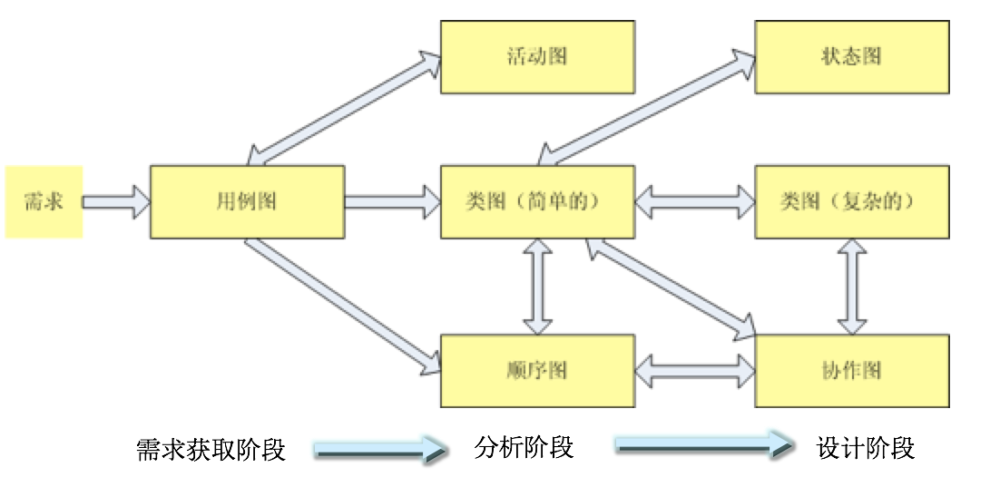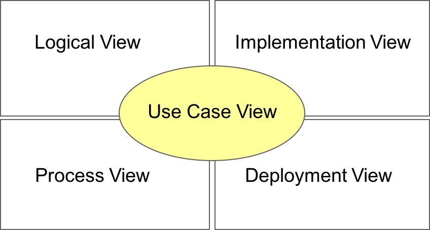
2.5 UML中的视图
- UML中的视图包括：（这5个视图被称为“4+1”视图）
- 用例视图
- 逻辑视图：用于表示系统的概念设计和子系统结构等。
- 实现视图：用于说明代码的结构。
- 进程视图：用于说明系统中并发执行和同步的情况。
- 部署视图：用于定义硬件节点的物理结构。
2.6 UML在系统开发各阶段的应用
- 在分析阶段，用户的需求用UML模型来描述。
- 在设计阶段，引入定义软件系统中技术细节的类（如处理用户接口、数据库、通信和并行性等问题的类）。
- 在实现阶段，用面向对象程序设计语言将来自设计阶段的类转换成实际的代码。
- UML模型还是测试阶段的依据
- 单元测试使用类图和类规格说明。
- 集成测试使用构件图和协作图。
- 系统测试使用用例图来验证系统的行为。
3. UML各种图简介
3.1 类图与对象图
- 类是一类或者一组具有类似属性和共同行为的事物。
- UML类图的特点：
- 矩形方框
- 被分为三个区域：类名、类的属性、类的操作
- 类名由多个单词组成；每个单词的首字母要大写，单词之间不用空格
- 属性名和操作名也类似，但首字母不用大写
- 每个操作名的后面都有一对括号
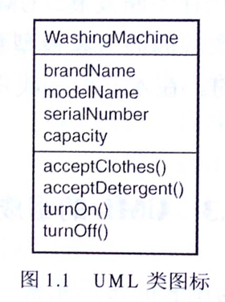 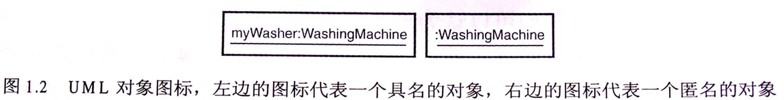 - 对象是一个类的实例，是具有具体属性值的一个具体事物。
- 矩形方框
- 对象名首字母为小写，对象名下面要带下划线
- 冒号左边为实例名，冒号右边为类名；对象也可以是匿名
3.2 用例图
- 用例是从用户的观点对系统行为的一个描述；它是用来从用户的观察角度收集系统需求的主要技术。
- 用例图的特点：
- 直立小人被称为参与者（actor）；参与者可以是一个人，也可以是另一个系统.
- 椭圆形代表用例。
- 矩形代表系统。
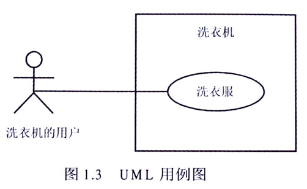 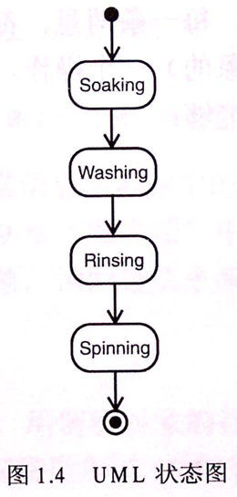
3.3 状态图
- 在任一给定的时刻，一个对象总是处于某一特定的状态。
- UML状态图的特点：
- 圆角矩形
- 最顶端的符号（实心圆）代表起始状态，而最底端的符号（眼形圆）表示终止状态
3.4 顺序图
- 顺序：类图和对象图表达的是系统的静态结构。在一个运行的系统中，对象之间要发生交互，并且这些交互要经历一定的时间。UML顺序图所表达的正是这种基于时间的动态交互。
- 顺序图的特点：
- 横坐标为系统中的对象
- 每个对象都有一个或多个操作
- 对象间通过相互传递消息来协同工作
- 纵坐标为时间序列 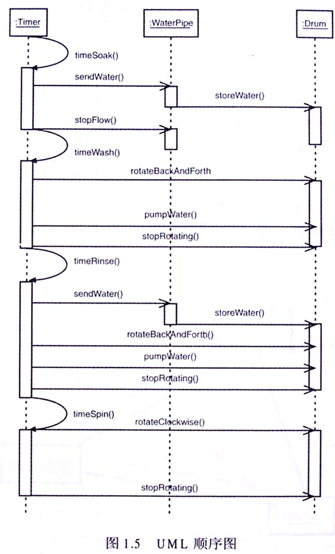
3.5 活动图
- 活动即工作步骤。
- 活动图的特点：
- 和流程图很接近
- 圆角矩形（比状态图更窄，更接近与椭圆）
- 箭头表示活动的转移
- 实心圆代表起点，眼形圆代表终点
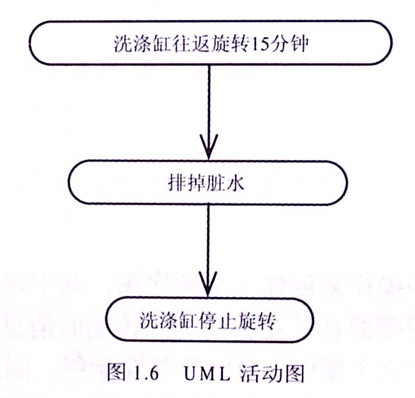 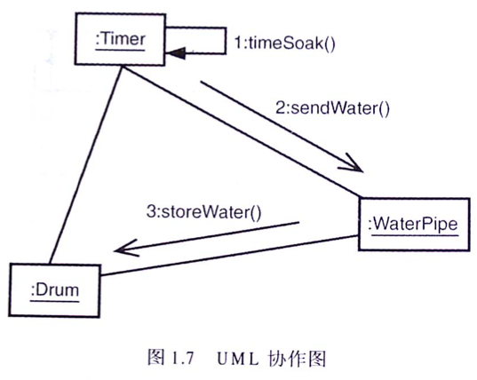
3.6 协作图
- 协作图用于展示对象之间的交互关系。
- 对象图展示出对象之间的静态关系。协作图是对对象图的扩展。协作图除了展示对象之间的关联，还显示出对象之间的消息传递。
- 协作图的特点：
- 关联线附近的箭头线表示对象之间传递的消息，箭头指向消息接收对象
- 消息名称和消息序号附在箭头线附近
- 顺序图和协作图之间可以相互转换
3.7 构件图
- 软件构件是软件系统的一个物理单元。在UML中，数据文件、表格、可执行文件、文档和动态链接库等都被定义为构件。
- 构件图和部署图与整个计算机系统密切相关。
- 构件图的特点：
- 一个左侧附有两个小矩形的大矩形框。
- 也可以用一个顶部带关键字 <
>的矩形表示。
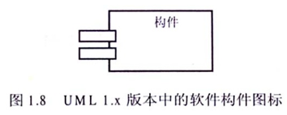 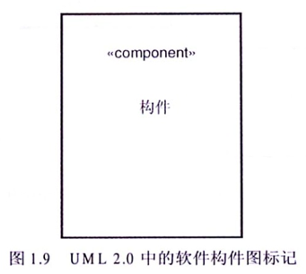
3.8 部署图
- 部署图的用途：UML部署图显示了基于计算机系统的物理体系结构。
- 部署图的特点：
- 立方体图标
- 立方体之间的连线表示体系之间的关系 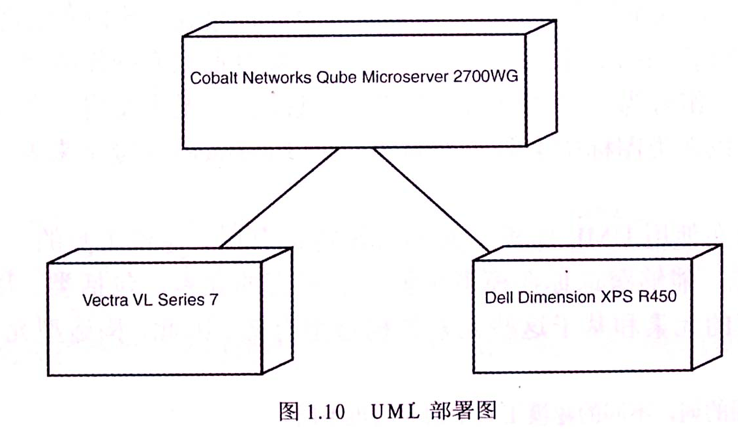
3.9 其他特征
- 注释：通过附加注释来做解释说明。
- 符号特征：
- 带折角的矩形，矩形中是解释性文字。
- 注释和被注释的图元素之间用一条虚线连接。
- 构造型（版型）
- 版型是建模人员在已有的构造块上派生出的新构造块，这些新构造块是和特定问题相关的。
- 版型可以应用于所有类型的模型元素，包括类、节点、构件、注解、关系、包、操作等。
- 关键字
- 版型用两对尖括号括起来的一个名称来表示，这个括号叫做双尖括号（guillemots）。这个被括起来的名称叫做关键字。
- 如
<<Interface>>，<<entity>>
3.10 为什么需要这么多种图
- 每一种UML图都提供一种组成特殊视图的方式。采用多视角的目标是为了能够和每一类风险承担人良好地沟通。
- UML是一套表示法系统。
- UML由一组图组成，它使得系统分析员可以利用这一标准来建立能够和客户、程序员以及任何参与程序开发的人员理解的多视角的系统蓝图。不同的风险承担人通常使用不同类型的图相互交流。
- UML模型只说明一个系统应该做什么，并没有告诉我们系统应该怎么做。
4. 关系
4.1 关联
- 关联：当类之间在概念上有连接关系时，类之间的连接叫做关联。
- 用一条线连接两个类，并把关联的名字放在这个连线上
- 关联的方向用一个实心三角形箭头来指明
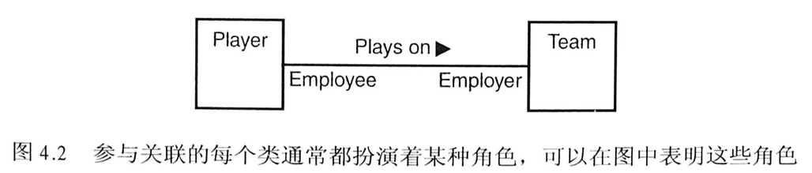 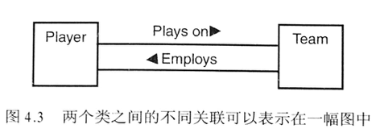 - 关系上的约束：两个类之间的一个关联随后就有一个规则，可以通过关联线附近加注一个约束来说明这个规则。
- 花括号、虚线（或关系）
- 关联类：和类一样，关联也可以有自己的属性和操作，称为关联类。
- 用虚线将关联类和对应的关联线连接起来。
- 链：关联类的实例叫做链。（类的实例是对象）
- 用一条线连接两个对象，并把链的名字放在这个连线上。
- 链的名字也要加下划线。
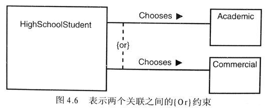 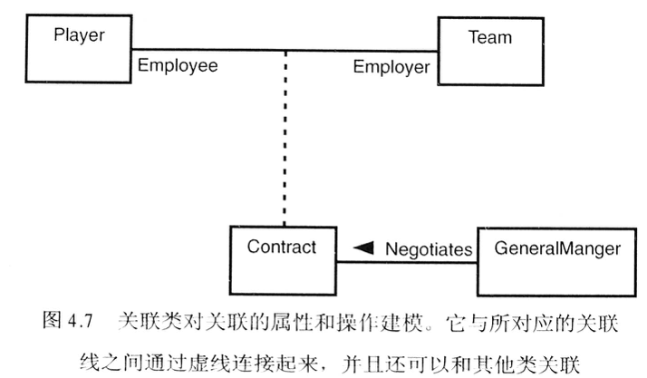
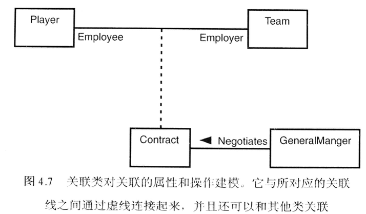
4.2 多重性
- 多重性：某个类有多个对象可以和另一个类的多个对象关联。
- 符号特征：在参与关联的类附近的关联线上注明多重性数值。UML使用
*来代表许多；1..*代表一个或多个；,代表”或”关系 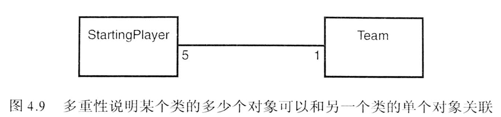
4.3 限定关联
- 在UML中，标识符ID（identification）信息叫做限定符。
- 符号特征：一个小矩形框 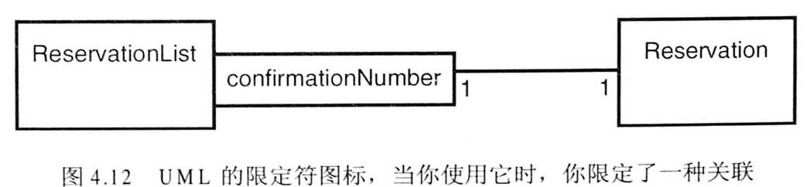
4.4 自身关联
- 一个类可能与它自己发生关联，这样的关联被称为自身关联。 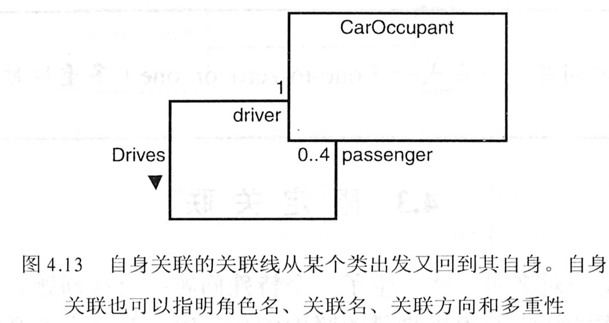
4.5 继承与泛化
继承：如果你知道某物所属的种类，你自然就会知道同类的其他事物也具有该事物的一些特征。在面向对象术语中，这种关系被称为继承。在UML中，则被称为泛化。
基类或根类 —— 叶类
单继承 —— 多继承符号特征： 指向父类一端带有一个空心三角箭头
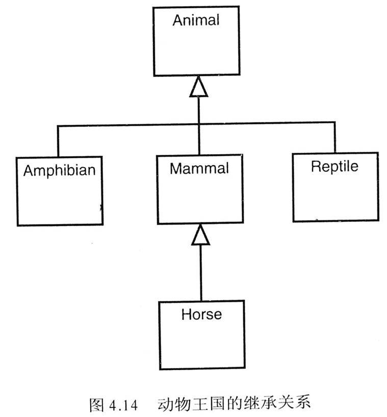抽象类：不提供实例对象的类被称为抽象类。
符号特征：类名用斜体书写
4.6 依赖
- 依赖：如果一个类使用了另一个类，这种关系称之为依赖。
- 符号特征：在有依赖关系的类之间画上一条带箭头的虚线 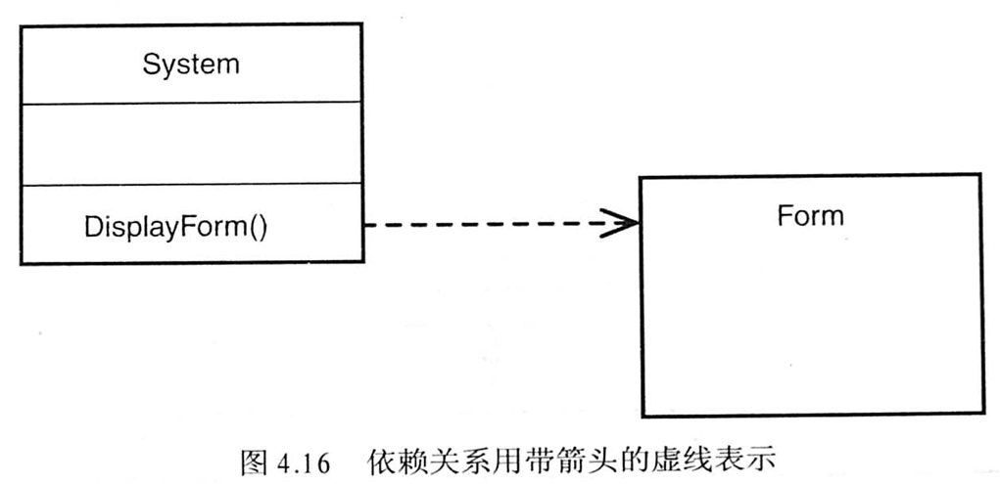
4.7 类图和对象图
类图给出的是多个类以及类之间的关系，它描述的是一般性的、定义性的信息
类图包括类以及类之间的关联；
类图用来表现系统的静态构成；
一个系统的静态构成可以由多张类图来共同描述，不同的类图描述了系统的不同层面、角度及范围。
对象图则在某个特定时刻多个具体实例以及它们如何联系起来的信息。
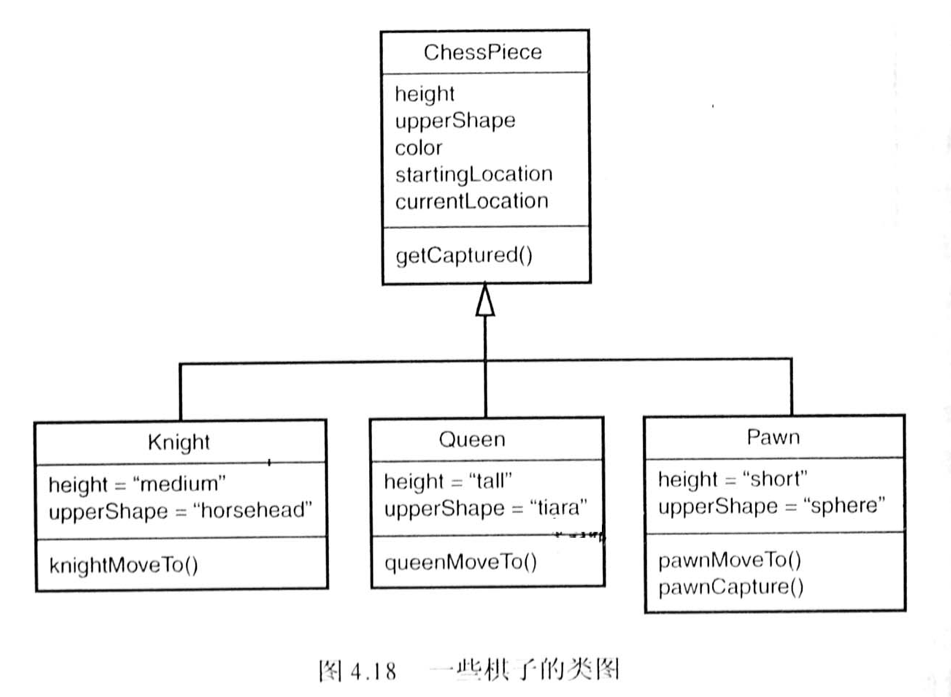 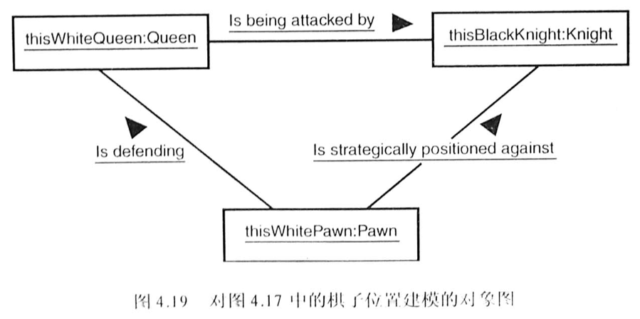
5. 聚集、组成、接口和实现
5.1 聚集
- 聚集：一个类有时是由几个部分类构成，这种特殊类型的关系被称为聚集。部分类和由它们组成的类之间是一种整体－部分（part-whole）关联。
- 符号特征：关联线上有一个空心菱形箭头，箭头的方向是从部分指向整体。 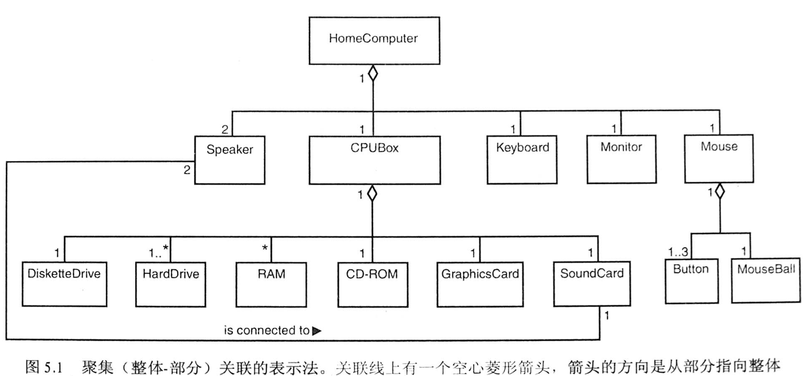
- 聚集上的约束：可以在聚集上施加一个“or”约束，它表示某个整体包含一个或另一个部分。 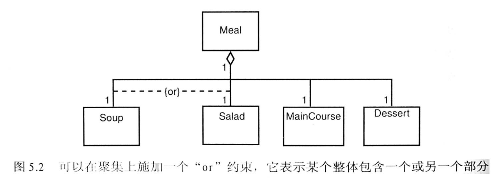
5.2 组成
- 组成：组成是强类型的聚集。聚集中每个部分体只能属于一个整体。
- 符号特征：关联线上有一个实心菱形箭头，箭头的方向是从部分指向整体。 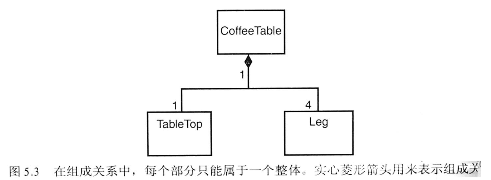
5.3 组成结构图
- 组成是展示一个类的构件的一种方式。通过组成结构图可以展示类的内部结构。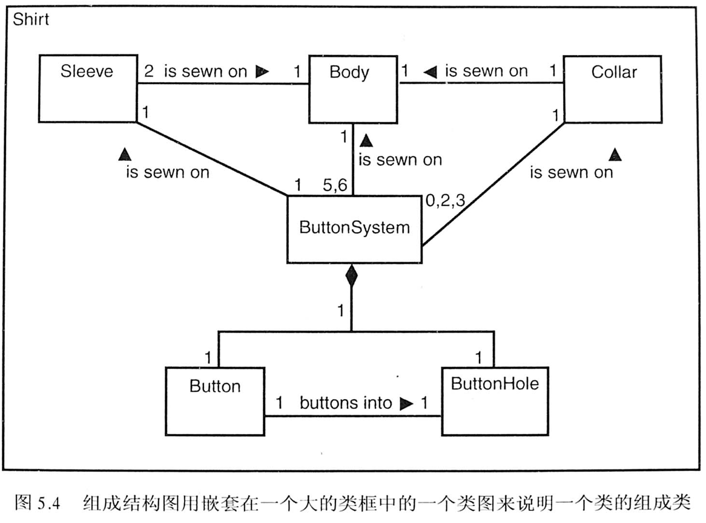
5.4 接口和实现
- 接口是描述类的部分行为的一组操作，它也是一个类提供给另一个类的一组操作。
- 符号特征：和类相似，都是用一个矩形图标来代表。接口只是一组操作，没有属性。
- 实现：一个类和它的接口之间的关系叫做实现。
- 符号特征：和继承符号相似，但它是一个带空心三角形的箭头的虚线表示，箭头的方向指向接口。省略表示法是将接口表示为一个小圆圈，并和实现它的类用一条线连起来
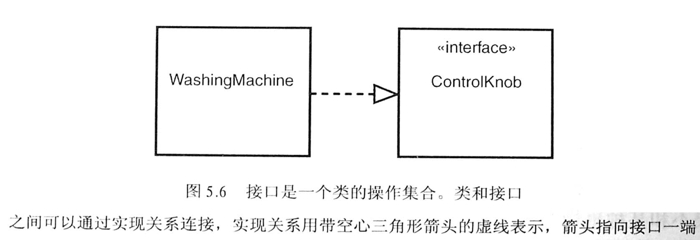 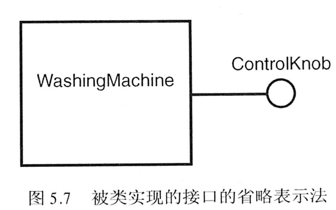
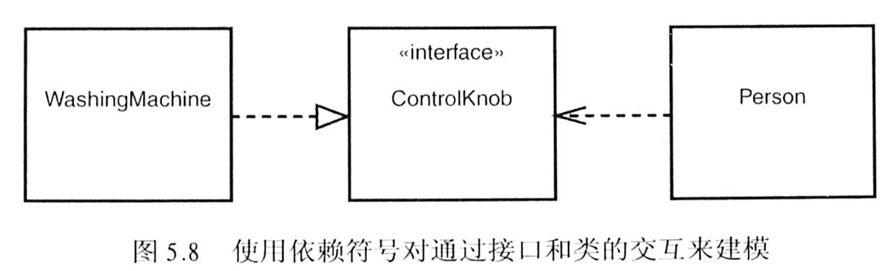 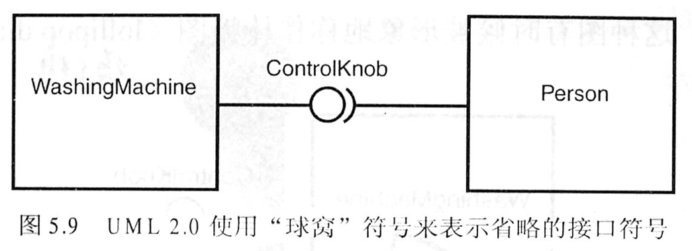
5.5 接口和端口
- 端口
- 符号特征：位于类符号边缘上的一个小方格，这个小方格连接到接口 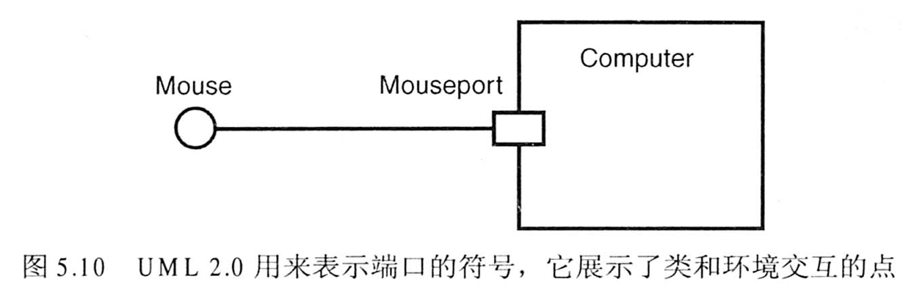
5.6 可见性
- 可见性可应用于属性或操作，它说明在给定类的属性和操作（或者接口的操作）的情况下，其他类可以访问到的属性和操作的范围。
- 可见性有三个层次（级别）：
- 公有层次上，其他类可以直接访问这个层次中的属性和操作。
- 受保护层次上，只有继承类这些属性和操作的子类可以访问最初类的属性和操作。
- 私有层次上，只有最初的类才能访问这些属性和操作。
- 符号特征
+表示该操作或属性是公有的（其它类可访问）#表示该操作或属性是受保护的（子类才可访问）-表示该操作或属性是私有的（最初类才可访问）
5.7 作用域
- 作用域是与属性和操作相关的又一个重要概念。存在两种可能的作用域：
- 实例作用域：类的每个实例对象都有自己的属性值和操作。
- 分类符作用域：一个类的所有实例只存在一个属性值和操作。
6. 用例图
6.1 什么是用例
- 用例的定义：
- 用例是系统的一组使用场景。每个场景描述了一个事件的序列。每个序列是由一个人、另一个系统、一台硬件设备或者某段时间的流逝所发起。
- 这些发起事件序列的实体叫做参与者。
- 用例是对一个参与者使用系统的一项功能时所进行的交互过程的一个文字描述序列。 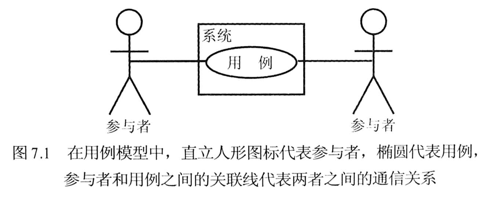
6.2 用例模型的表示法
用例模型（use case model）
用户知道的比他们清楚表达出来的要多，用例能帮助用户解决表达问题。
用例是由参与者发起的，参与者（或许是发起者，但不是必须的）能够从用例的执行中获得有价值的事物。
参与者、用例和互连线共同组成了用例模型。
每个用例是一组场景的组合，而每个场景又是一个步骤序列。
用例描述的主要内容：
用例的目标
用例是怎样启动的
参与者和用例之间的消息是如何传递的
用例中除了主路径外，其它路径是什么
用例结束后的系统状态
其它需要描述的内容
符号特征：
用例用一个椭圆形表示。
参与者用直立人形图标表示。
用例的发起参与者在用例图的左侧，接收参与者在用例图的右侧。
关联线连接参与者和用例并且表示参与者与用例之间有通信关系；关联线是实线。
6.3 用例之间关系的可视化表示
- **
包含**：在一个用例中重用另一个用例中的步骤 - 符号特征：虚线箭头，箭头指向被包含的用例，在虚线上加关键字
<<include>>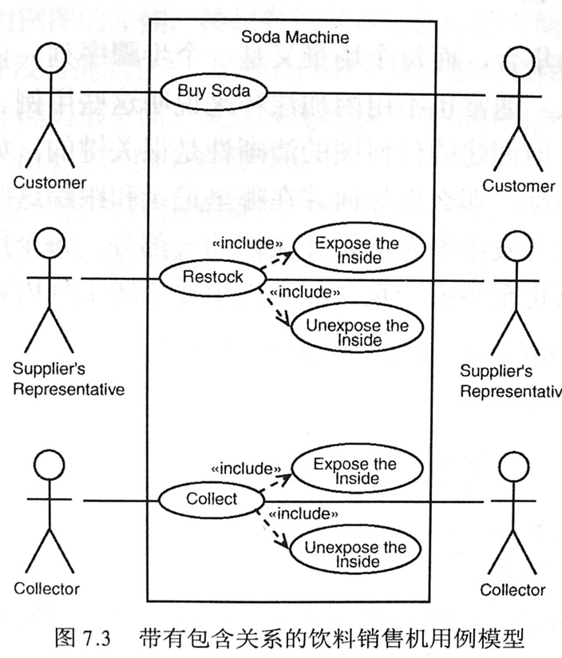 - **
扩展**：通过对已有用例增加步骤创建一个新的用例 - 基用例：新用例扩展了原来的用例，因为它在原来的用例上增加了新的步骤序列，因此原用例被称作基用例。
- 扩展点：扩展只能发生在基用例的序列中某个具体指定点上，这个点叫做扩展点。
- 符号特征：虚线箭头，箭头指向基用例，在虚线上加关键字
<<extend>>，在基用例中注明扩展点的发生位置。 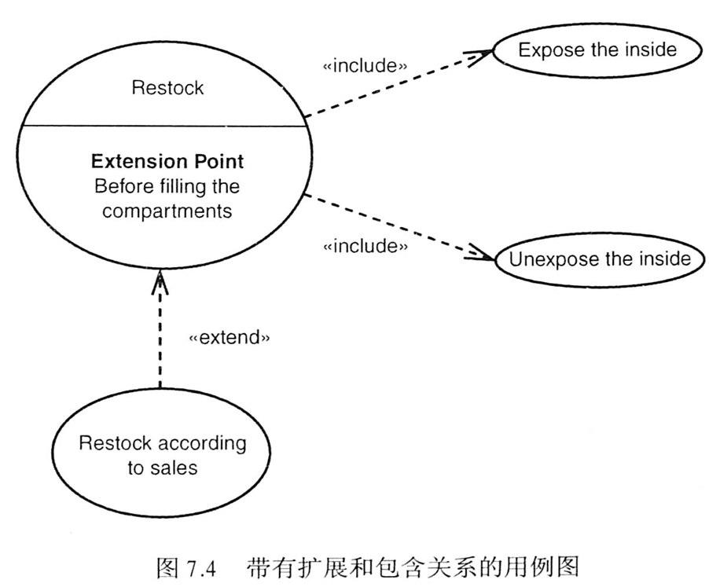 - **
泛化**：子用例可以继承父用例的行为和含义，还可以增加自己的行为。任何父用例出现的地方子用例也可以出现。 分组：当一个系统包含很多子系统时。最直接的办法就是把相关的用例放在一个包中组织起来。- 符号特征：包用一个一边突起的文件夹形的矩形框表示，一组用例可以出现在一个文件夹框中。
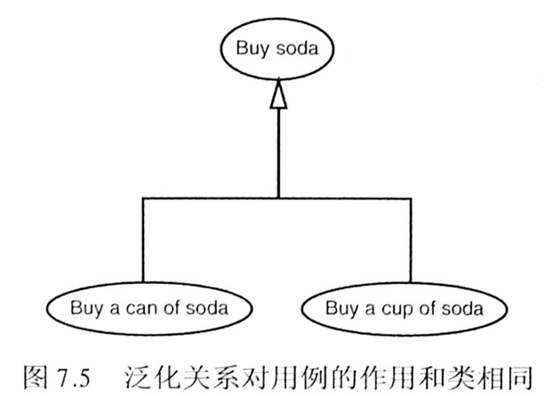 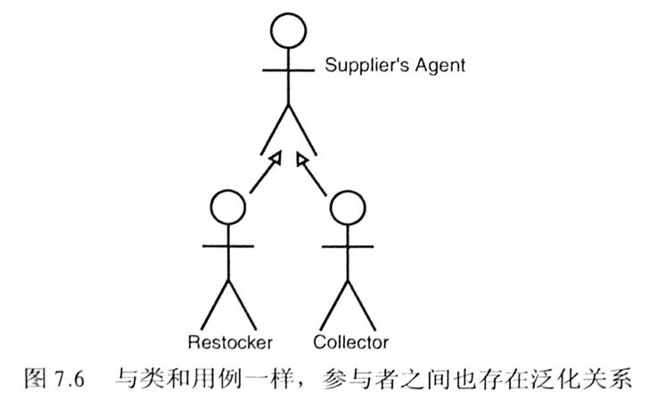
6.4 运用用例模型的实例 P75
- 《银行系统的分析与设计》中的用例图 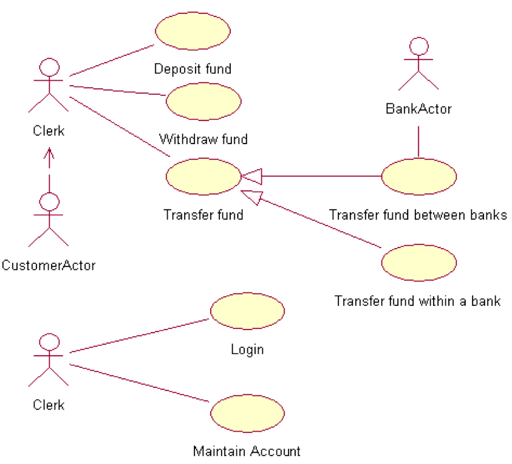
6.5 用例的一些特点
- Use case从使用系统的角度描述系统中的信息，即站在系统外部察看系统功能，并不考虑系统内部对该功能的具体实现方式。
- 使用use case可以促进与用户沟通，理解正确的需求，同时也可以用来划分系统与外部实体的界限，是OO系统设计的起点，是类、对象、操作的来源。
- 用例描述了用户提出的一些可见的需求；用例可大可小；用例对应一个具体的用户目标
- 理论上可以把一个软件系统的所有Use Case画出来，但实际运用时只需把重要的、交互过程复杂的那些画出来。
7. 顺序图
7.1 什么是顺序图
- 关键思想
- 对象之间的交互是按照特定的顺序发生的，这些按特定顺序发生的交互序列从开始到结束需要一定的时间。
- 当建立一个系统时，必须要指明这种交互序列，顺序图就是用来完成这项工作的UML组件。
- 符号特征
- 对象用矩形表示，其中是带下划线的对象名。
- 时间用垂直虚线表示。
- 消息用带箭头的直线表示。
- 激活用窄矩形条表示。
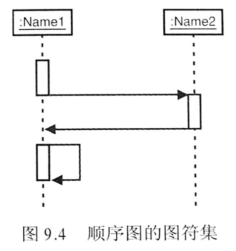 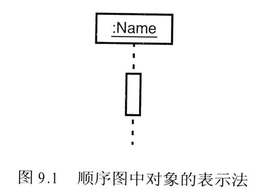 - 建立顺序图的步骤 P93
- 确定交互过程的上下文。
- 识别参与交互过程的对象。
- 为每个对象设置生命线，即确定哪些对象存在于整个交互过程中，哪些对象在交互过程中被创建和撤销。
- 从引发这个交互过程的初始消息开始，在生命线之间从顶到下依次画出随后的各个消息。
- 如果需要表示消息的嵌套，或/和表示消息发生时的时间点，则采用激活。
- 如果需要说明时间约束，则在消息旁边加上约束说明。
- 如果需要，可以为每个消息附上前置条件和后置条件。
7.2 顺序图的组成部分
对象- 从左到右布置在顺序图的顶部
- 匿名对象
- 生命线（lifeline）
- 激活（activation）＝控制焦点（focus of control，FOC）
- **
消息**：一个对象到另一个对象的消息用跨越对象生命线的消息线表示 - 调用消息：消息的发送者把控制传递给消息的接收者，然后停止活动，等待消息接收者放弃或返回控制。一般地，调用消息的接收者必须是一个被动对象，即它是一个需要通过消息驱动才能执行动作的对象。
- 返回消息：调用消息必有一个配对的返回消息，为了图的简洁和清晰，与调用消息配对的返回消息可以不用画出。如果为非过程调用，如果有返回消息，则必须明确表示出来。
- 同步消息：调用消息。由于发送者等待接受者，调用消息又称为同步消息。
- 异步消息：发送者通过消息把信号传递给消息的接收者，然后继续自己的活动，不等待接收者返回消息或控制。异步消息的接收者和发送者是并发工作的。
- 其它：阻止消息，超时消息，反身消息
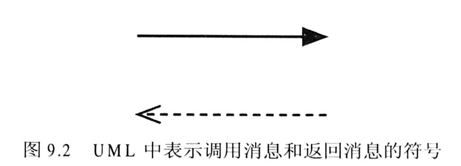 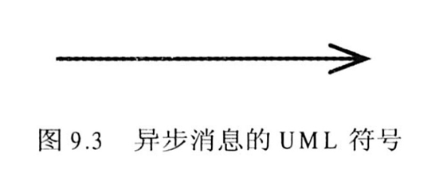 - **
时间**：顺序图中垂直方向代表时间维，时间流逝的方向为自顶而下。
顺序图 - 汽车和车钥匙 P93
顺序图 - 饮料销售机 P95
顺序图 - 一般顺序图 P97
顺序图 - 帧化顺序图 P100
- 在UML2.0，帧化一个顺序图：用一个边框包围它并在左上角添加一个间隔区。这个间隔区包含了识别该顺序图的信息。
- 其中一小段信息是操作符，间隔区还包括了图所描述的交互的名字。
- 操作符：
- 顺序图：操作符为sd（sequence diagram）
- 交互事件：操作符为ref（reference）
- 交互片断的组合：操作符有alt（alternation）和par（parallel） P102
8. 协作图
8.1 协作图
- 协作图的作用
- 对象图展示的是对象之间的静态关系。
- 协作图是对象图的扩展。协作图除了展示出对象之间的关联，还显示出对象之间的消息传递。
- 对象图是一个快照；而协作图是一部电影。
- 协作图与顺序图两者之间是语意等价的。
- 两种图表达的同一种信息，两者之间可以相互转换。
- 顺序图与协作图之间的不同
- 顺序图强调的是交互的时间顺序；
- 协作图强调的是交互的过程和参与交互的对象的整体组织。
8.2 协作图 - 饮料销售机 P111
9. 状态图
9.1 什么是状态图
- 状态图的概念：
- 人或事物表现出来的形态。
- 当系统与用户（也可能是其它系统）交互的时候，组成系统的对象为了适应交互需要经历必要的变化。如果要对系统建立模型，那么模型中必须要反映出这种变化。
- 状态图与类图、对象图和用例图的本质区别
- 状态图只是对单个对象建立模型
- 符号特征
- 状态用圆角矩形表示
- 状态间带箭头的实线代表状态的迁移（转移），箭头指向目标状态
- 实心圆代表状态转移的起点，眼形圆圈代表终点
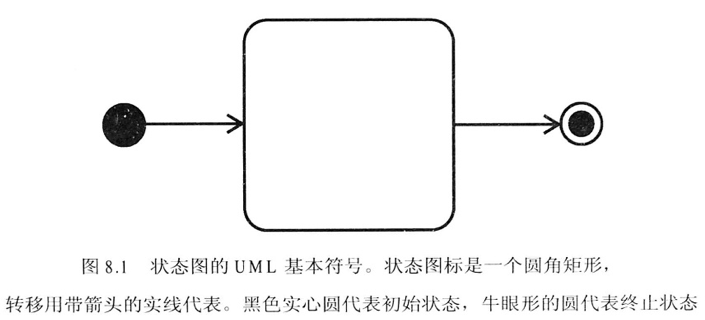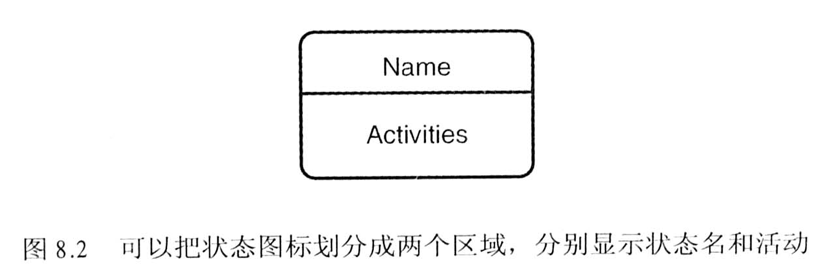 - 增加状态图的细节
- 常用的活动（入口动作；出口动作；动作） 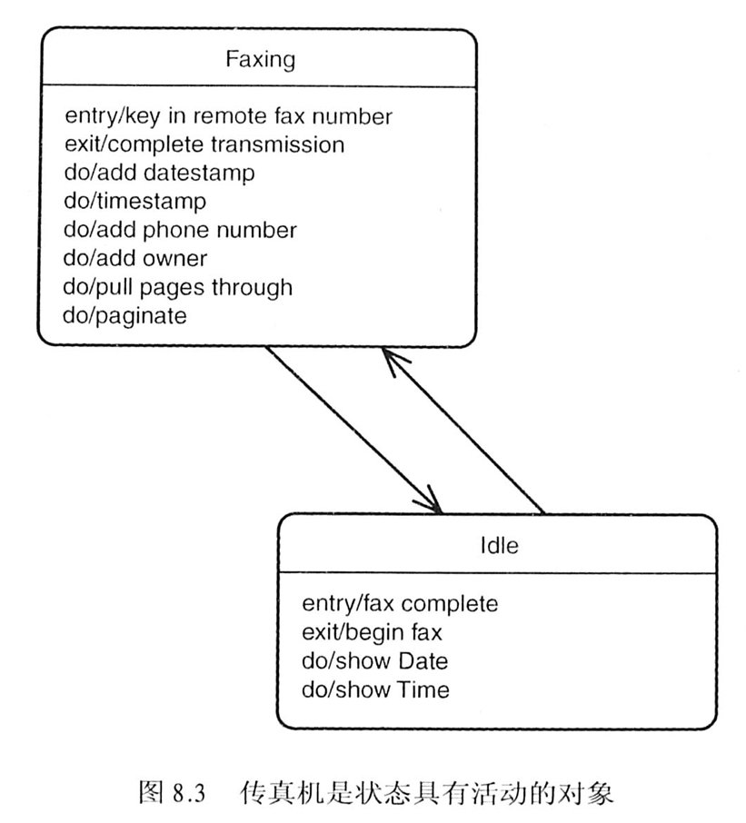
- 增加转移的细节：事件和动作
- 触发器事件：状态转移线可以指明引起转移发生的事件和引起状态发生变化所需之行的计算。
- 无触发器转移：有时候一个事件会引起没有相关动作的状态转移，或者一个转移是由于某个状态完成了它的活动所引起（而不是由于事件引起）
- 保护条件：当满足这个条件时，转移才能发生。 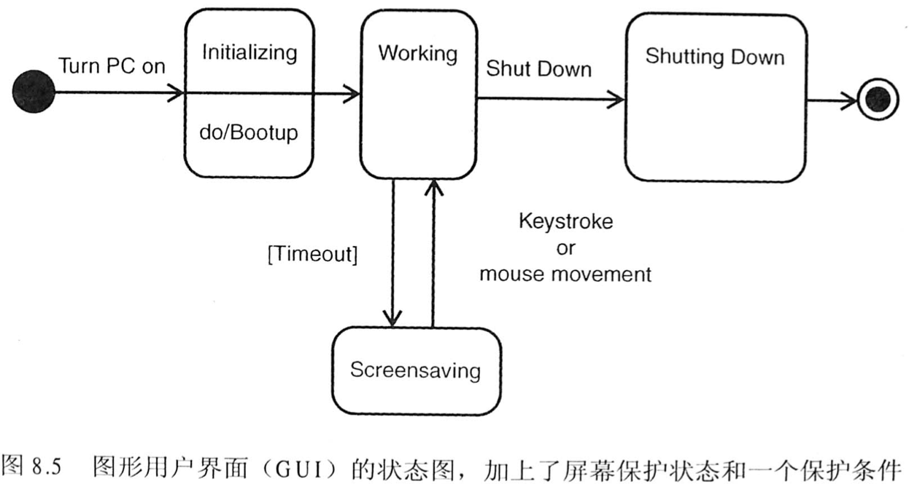
8.2 子状态
- 顺序子状态：按照顺序一个接着一个出现。
- 并发子状态：在处于working状态时，GUI并不是 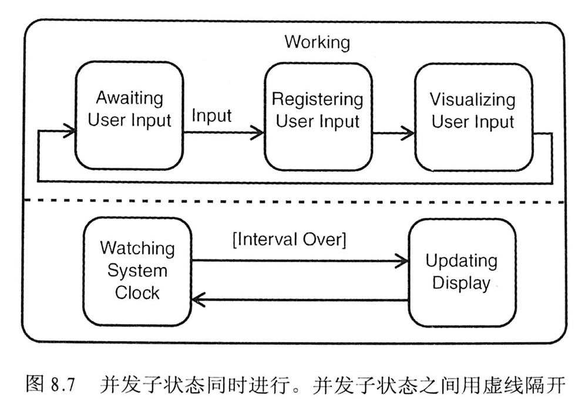
9. 活动图
9.1 什么是活动图
- 活动图：被设计用于简化描述一个过程或者操作的工作步骤。
- 符号特征
- 活动用圆角矩形表示（更接近椭圆）
- 箭头表示从一个活动转移到下一个活动
- 活动图中的起点用一个实心圆表示，终点用一个眼形圆表示 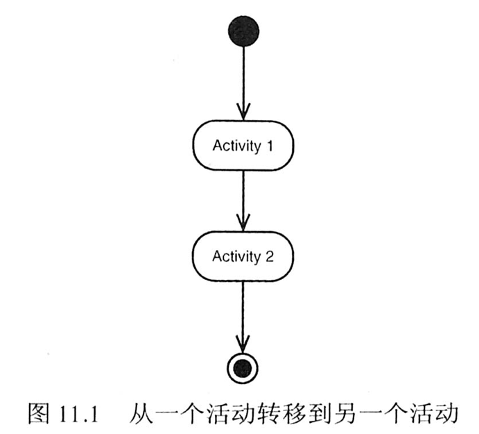
9.2 活动图的组成
- **判定(分支)**：if-else / if(无else) 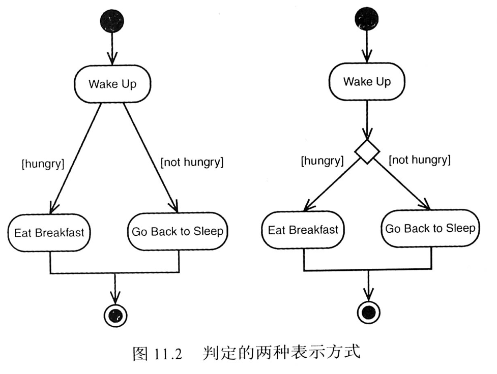
- 并发路径：两个单独的同时（并发）执行的路径。
- 信号：活动序列中的活动可以发送信号。当信号被接受时，会引起另一个活动的发生
- 泳道：将活动图按执行的角色分割成多个平行的段，这些段被称为泳道。每个泳道的顶部显示出角色名，每个角色负责的活动放在各个角色的泳道中。
- 混合图：P122 对活动的描述更为具体、细化。
9.3 活动图 - 银行系统分析
10. 构件图
10.1 什么是构件
- 构件是系统中遵从一组接口且提供其实现的物理的、可替换的部分。
- 构件图则显示一组构件以及他们之间的相互关系，包括编译、链接或执行时构件之间的依赖关系。
- 构件图和部署图用于在OO系统中实现物理方面的建模
- 构件的类型：(构件就是一个实际文件，可以有以下几种类型)
- 部署构件，如dll文件、exe文件、COM+对象、动态Web页、数据库表等
- 工作产品构件，如源代码文件、数据文件等，这些构件可以用来产生部署构件
- 执行构件，也就是系统执行后得到的构件
- 构件与类的区别：
- 类是逻辑抽象，构件是物理抽象
- 构件是对其它逻辑元素，如类，协作的物理实现
- 类可以有属性和操作；构件通常只有操作，而且这些操作只能通过构件的接口才能使用
- 为什么要对构件和构件的关系建立模型
- 使客户能够看到最终系统的结构和功能
- 让开发者有一个工作目标
- 让编写技术文档和帮助文件的技术人员能够理解所写的文档是关于哪方面的内容
- 利于复用
- 符号特征：
- 左侧附有两个小矩形的大矩形框；也可以用一个顶部带关键字
<<Component>>的矩形表示 - 构件有自己的名称。如果构件属于一个包，可以在构件名称前面加上包名
- 可以在构件图标中列出构件的操作
10.2 构件的接口表示法
- 可以用一个包含信息的矩形来表示接口，并用实现关系箭头和构件相连。
- 也可以用小圆圈表示接口，并用实现连接构件。
11. 部署图
11.1 什么是部署图
- 部署图的用途
- 部署图用来描述系统硬件的物理拓扑结构以及在此结构上执行的软构件
- 部署图也称配置图，实施图。常常用于帮助理解分布式系统
- 部署图由体系结构设计师，网络工程师，系统工程师等描述
11.2节点与连接
- 节点：
- 节点代表一个物理设备以及其上运行的软件系统，如一台Unix主机、一个PC终端、一台打印机、一个传感器等
- 节点之间的连线表示系统之间进行交互的通信路径，在UML中称为连接。
- 节点的划分
- 处理器：能够执行软件构件的节点
- 设备：不能执行软件构件的外围硬件，但它通常都具备某种形式的与外部世界的接口。如modem、终端。
- 符号特征：
- 用立方体表示
- 加关键字
<<Device>> - 连接
- 连接两个节点的一条线，表示了两个节点相连（但不一定要是一段电线或电缆）
11.3 应用部署图 P147
- 家用计算机系统
- 令牌环网
- ARCnet
- 细缆以太网
- Ricochet无线网
11.4 部署图建模风格
- 只对重要的软构件建模
- 事实上，每个节点可能有几十甚至几百个软构件部署在上面，建模人员的目标不是把所有软构件都描绘出来，而是只描绘那些对理解系统来说至关重要的构件。
- 如果要探究软构件之间的关系，则采用UML构件图而不是部署图。
- 对节点使用可视化的版型
- 目前还没有关于如何在UML部署图中使用可视化版型的标准，但一般的经验法则是使用能找到的最合适的剪贴图。
12. 在开发过程中运用UML
12.1 开发过程方法学
- 在进行程序设计前，开发人员必须要充分理解所要解决的问题，这需要专门有人负责需求的分析。在完成需求分析后，还必须有人将分析的产品转化为设计产品。然后，程序员再根据设计进行产品编制代码，这些代码在经过测试和部署后，最终称为目标系统。
- 传统的开发过程方法学：“瀑布”模型 分析 -> 设计 -> 编码 -> 部署
- 新的开发过程方法学：强调无缝集成
- 开发方式的变化
- 个人→大型团队，短期→长期，交互与反馈，并行
- 团队组成
- 系统分析员：与客户交流，理解客户的问题
- 设计人员：设计问题的解决方案
- 程序设计人员：将解决方案编制成代码
- 系统工程师：将代码部署到硬件上运行
- 一个开发方法学必须要能够做到：
- 保证开发小组对所要解决的问题有个坚实的理解
- 要考虑到开发小组是由不同角色完成
- 能够在小组的不同角色成员之间培养良好的通信关系
- 考虑到跨越阶段的开发过程的反馈信息
- 开发出能够向客户反映出开发进度的工作产品，但是要避免产生过多的纸面制品
12.2 GRAPPLE 快速应用工程指导原则
- GRAPPLE的含义
- 快速应用工程指导原则（Guidelines for Rapid APPLication Engineering）
- 强调可自适应的、灵活的开发思想
- GRAPPLE的结构：RADDD / RAD3
- 需求收集（requirements gathering）
- 分析（analysis）
- 设计（design）
- 开发（development）
- 部署（deployment）
需求收集（一）- 发现领域过程：获得客户业务领域词汇；活动图
- 领域分析：高层类图
- 识别协作系统：系统关系；部署图
- 发现系统需求：联合应用开发会议；包图（每个包代表了一个系统功能的高层领域；每个包中包括了一组用例）
- 将结果提交给用户
分析（二）- 理解系统的用法：明确用例，开发新用例
- 充实用例：分析出每个用例的步骤序列
- 细化类图：关联名，抽象类，多重性，泛化，聚集
- 分析对象状态变化：（对象）状态图
- 定义对象之间的交互：顺序图，协作图
- 分析与协作系统的集成：系统工程师完成
设计（三）- 开发和细化对象图：对象图，活动图
- 开发构件图：构件图
- 制定部署计划：部署图
- 设计和开发用户界面原型：屏幕界面原型快照
- 测试设计：外部专家
- 开始编制文档：文档的高层结构
开发（四）- 编制代码：根据类图、对象图、活动图、构件图
- 测试代码
- 构建用户界面和用户界面到代码的连接和测试
- 完成文档
- 部署（五）
- 编制备份和恢复计划
- 在硬件上安装最终系统
- 测试安装后的系统
- 庆贺
12.3 学习案例介绍 - 发现业务过程 P183
13. 领域分析
13.1 分析业务过程会谈
- 概念性任务：运用技术来使外出就餐的人们感到更加满意
- 会谈目标
- 建立领域词典（模型词典，初步类图）
- 通过谈话记录中整理名词、动词以及动词短语。其中的一些名词将可能成为模型中的类，另一些名词将成为类的属性。动词或者动词短语可能成为类的操作或类之间的关联标记。
13.2 开发初步类图 P195
13.3 对类分组
13.4 形成关联
13.5 形成聚集和组成
13.6 填充类的信息
14. 收集系统需求
- 产生能反映系统功能的包图，每个包代表系统的一个功能模块，其中包含了详细说明该功能模块的若干个用例。
- 系统部署图
- 系统的功能包图 P219
- 新的类图（反映角色之间的静态关系）
15. 开发用例
15.1 用例分析
- 用例是一组场景的集合，每个场景又是由一系列步骤组成
- 系统开发过程是用例驱动的
- 详细分析前面所列举出的用例，并开始研究如何将WIN系统中的构件具体化
- 对于每个用例的每个场景，需要说明的内容有：
- 场景的简单陈述
- 关于场景的假设条件
- 用例的发起参与者
- 场景的前置条件
- 场景中与系统相关的步骤序列
- 场景完成后的后置条件
- 用例的受益参与者
- 其它：异常条件，可选的场景流程
15.2 Server包 P225
16. 交互
16.1 系统中的工作部件 P223
- 每个用例的背后都隐藏一张顺序图
- 绘制用例的顺序图可以帮助我们细化和修改用例
- 构件交互分析的结果应该能使程序员更容易地编制实现构件和构件之间通信的代码
17. 设计外观、感觉和部署 P242
All articles in this blog are licensed under CC BY-NC-SA 4.0 unless stating additionally.